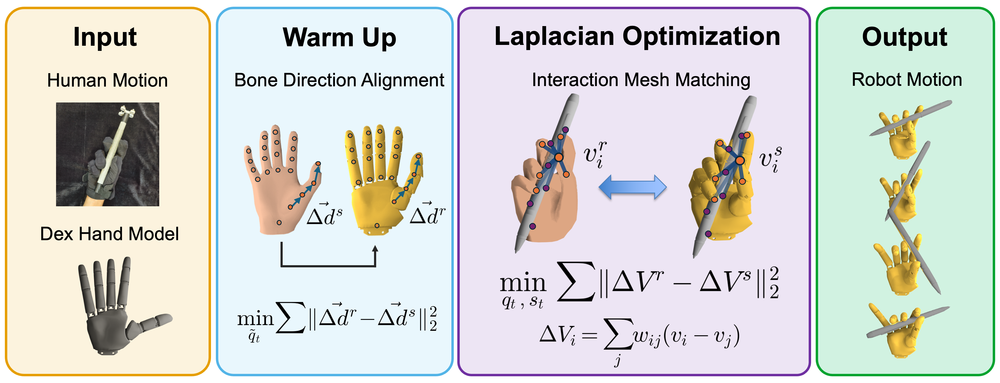
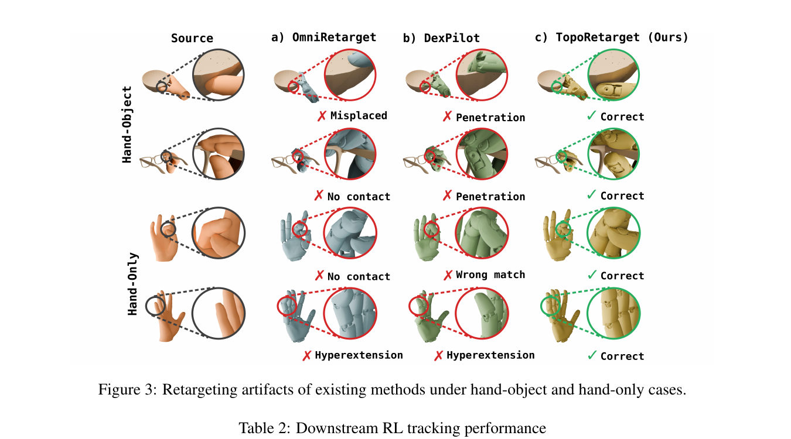
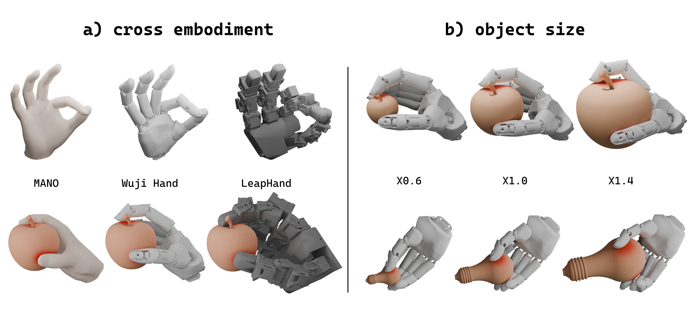

CoRL 2026 (Under Review)
motion retargeting · reinforcement learning · dexterous manipulation · trajectory optimization
We retarget human hand-object demonstrations to the Wuji Hand while keeping the interaction that drives the task intact, then train reference-tracking policies for contact-rich skills such as pen spinning and cube reorientation. (Unmute for narration.)
Human demonstrations are a rich source of reference motion for dexterous manipulation, but they are hard to reuse directly. Human and robot hands differ enough that naively matching fingertips or joint angles breaks the contact structure that actually drives a task — and those artifacts propagate into reinforcement learning as missed contacts, penetration, and infeasible poses.
We introduce TopoRetarget, an interaction-centric retargeting framework. Instead of copying hand pose, it preserves the local hand-object topology — which keypoints touch, and how. We build a sparse interaction graph over hand and object keypoints and solve a distance-weighted Laplacian deformation under directional-consistency, kinematic, and non-penetration constraints. A single parameter set handles every embodiment, object, and scale we evaluate.
The references this produces are both more faithful and easier to learn from. On ContactPose, TopoRetarget attains the best contact precision and alignment of any baseline; it lifts Pen-Spin training success by +40.6 percentage points; and the policies it enables transfer to Wuji Hand hardware zero-shot on cube reorientation and pen spinning.
How does it work? We turn a single human demonstration into a robot-ready reference in four steps — then let a lightweight RL policy track it.

TopoRetarget overview. Given a human demonstration, object mesh, and target hand model, the method aligns bone directions during initialization, constructs source and robot interaction meshes, and computes the robot configuration via topology-aware Laplacian optimization. The output robot motion reference preserves hand-object interaction.
How does this compare to prior retargeting? Hand-centric and contact-aware baselines tend to miss contacts, penetrate the object, or hyperextend joints. TopoRetarget doesn't.

Retargeting artifacts of existing methods under hand-object and hand-only cases. Compared with hand-centric and contact-aware baselines (DexPilot, GeoRT, OmniRetarget, and others), TopoRetarget avoids missed contacts, hand-object penetration, and joint hyperextension caused by uniform-weight Laplacian deformation on a global scale — −36% contact precision error and −91% max penetration vs the baseline average.

Augmentation across object scales and dexterous hand embodiments without per-case retuning: from a single human demonstration, TopoRetarget adapts to new object meshes, object scales, and hand embodiments (MANO, Wuji, Leap).
Because the references are clean, RL has far less to fight: we train a contact-rich pen-spinning policy in 1.5 hours on a single GPU under a lightweight reward-tracking setup.
But does it survive contact with reality? We deploy the trained policies on the Wuji Hand with no fine-tuning — pure zero-shot transfer from simulation.
Zero-shot cube reorientation on the Wuji Hand:
Across 5 / 5 zero-shot trials the policy keeps the pen spinning on the Wuji Hand. Here is one full-length, uncut stability run:
@inproceedings{toporetarget2026,
title = {TopoRetarget: Interaction-centric Retargeting for Dexterous Manipulation},
author = {Anonymous},
booktitle = {Conference on Robot Learning (CoRL)},
year = {2026}
}